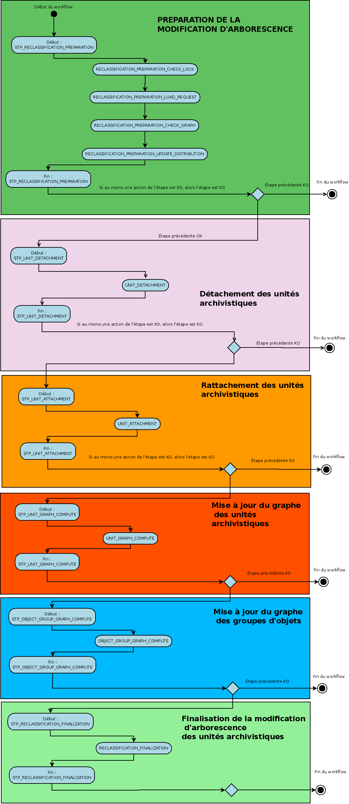

Workflow de modification d’arborescence¶
Introduction¶
Cette section décrit le processus permettant la modification d’arborescence d’archives, c’est à dire de modifier les rattachements d’une unité archivistique présente dans le système.
Le processus de modification d’arborescence est lié à des ajouts et des suppressions de liens de parenté, en sachant que les unités archivistiques modifiées ou rattachées doivent être accessibles par le contrat d’accès.
Etape de préparation de la modification d’arborescence des unités archivistiques STP_RECLASSIFICATION_PREPARATION¶
- Règle : préparation de la modification d’arborescence des unités archivistiques
Type : bloquant
Statuts
- OK: l’étape de préparation de la modification d’arborescence des unités archivistiques a bien été effectué (RECLASSIFICATION_PREPARATION.OK = Succès du début de la préparation de la modification d “arborescence des unités archivistiques)
- KO: l’étape de préparation de la modification d’arborescence des unités archivistiques n’a pas été effectué (RECLASSIFICATION_PREPARATION.KO = Échec de la préparation de la modification d “arborescence des unités archivistiques)
- FATAL: Erreur technique a eu lieu lors de l “étape de préparation de la modification d’arborescence des unités archivistiques (RECLASSIFICATION_PREPARATION.FATAL = Erreur technique lors de la préparation de la modification d “arborescence des unités archivistiques)
Vérification des processus concurrents CHECK_CONCURRENT_WORKFLOW_LOCK¶
- Règle : le but est de vérifier s’il n’y a pas d’autre processus de modification d’arborescence en cours. Si tel est le cas, le processus n’est pas lancé afin d’éviter les cycles rattachements/detachements concernant plusieurs unités archivistiques.
- Type : bloquant
- Statuts :
- OK : le contrôle de la cohérence du graphe a bien été effectué (RECLASSIFICATION_PREPARATION_CHECK_LOCK.OK = Succès de la vérification des processus concurrents)
- KO : le contrôle de la cohérence du graphe n’a pas pu s’effectuer (RECLASSIFICATION_PREPARATION_CHECK_LOCK.KO = Échec lors de la vérification des processus concurrents)
- FATAL : une erreur technique est survenue lors de la vérification des processus concurrents (RECLASSIFICATION_PREPARATION_CHECK_LOCK.FATAL = Erreur technique lors de la vérification des processus concurrents)
Chargement des unités archivistiques : RECLASSIFICATION_PREPARATION_LOAD_REQUEST¶
- Règle : chargement des unités archivistiques
- Type : bloquant
- Statuts :
- OK : le chargement des unités archivistiques a bien été effectué (RECLASSIFICATION_PREPARATION_LOAD_REQUEST.OK = Succès du chargement des unités archivistiques au moment de la modification d “arborescence des unités archivistiques)
- KO : le chargement des unités archivistiques n’a pas pu s’effectuer (RECLASSIFICATION_PREPARATION_LOAD_REQUEST.KO = Échec du chargement des unités archivistiques au moment de la modification d “arborescence des unités archivistiques)
- FATAL : une erreur technique est survenue lors du chargement des unités archivistiques (RECLASSIFICATION_PREPARATION_LOAD_REQUEST.FATAL = Erreur technique lors du chargement des unités archivistiques au moment de la modification d “arborescence des unités archivistiques)
Vérification de la cohérence du graphe : RECLASSIFICATION_PREPARATION_CHECK_GRAPH¶
- Règle : cette vérification a pour but de vérifier la cohérence du graphe, c’est à dire vérifier que les rattachements s’effectuent de façon cohérente entre les différents types d’unités archivistiques: Plan, classement, unités simples.
- Type : bloquant
- Statuts :
- OK : le contrôle de la cohérence du graphe a bien été effectué (RECLASSIFICATION_PREPARATION_CHECK_GRAPH.OK = Succès du contrôle de cohérence du graphe au moment de la modification d “arborescence des unités archivistiques)
- KO : le contrôle de la cohérence du graphe n’a pu s’effectuer (RECLASSIFICATION_PREPARATION_CHECK_GRAPH.KO = Échec du contrôle de cohérence du graphe au moment de la modification d “arborescence des unités archivistiques)
- FATAL : une erreur technique est survenue lors du contrôle de cohérence du graphe (RECLASSIFICATION_PREPARATION_CHECK_GRAPH.FATAL = Erreur technique lors du contrôle de cohérence du graphe au moment de la modification d “arborescence des unités archivistiques)
Préparation de la mise à jour du graphe : RECLASSIFICATION_PREPARATION_UPDATE_DISTRIBUTION¶
- Règle : préparation de la mise à jour du graphe
- Type : bloquant
- Statuts :
- OK : la mise à jour du graphe au moment de la modification d “arborescence des unités a bien été effectué (RECLASSIFICATION_PREPARATION_UPDATE_DISTRIBUTION.OK = Succès de la préparation de la mise à jour du graphe au moment de la modification d “arborescence des unités archivistiques)
- KO : la mise à jour du graphe au moment de la modification d “arborescence des unités n’a pas pu s’effectuer (RECLASSIFICATION_PREPARATION_UPDATE_DISTRIBUTION.KO = Échec lors de la préparation de la mise à jour du graphe au moment de la modification d “arborescence des unités archivistiques)
- FATAL : une erreur technique est survenue lors de la préparation de la mise à jour du graphe (RECLASSIFICATION_PREPARATION_UPDATE_DISTRIBUTION.FATAL=Erreur technique lors de la préparation de la mise à jour du graphe au moment de la modification d “arborescence des unités archivistiques)
Etape de détachement des unités archivistiques (STP_UNIT_DETACHMENT)¶
- Règle : étape de détachement des unités archivistiques
Type : bloquant
Statuts
- OK: le détachement des unités archivistiques a bien été effectué (STP_UNIT_DETACHMENT.OK=Succès de l “étape de détachement des unités archivistiques)
- KO: le détachement des unités archivistiques n’a pas pu s’effectuer (STP_UNIT_DETACHMENT.KO=Échec lors de l “étape de détachement des unités archivistiques)
- FATAL: une erreur technique est survenue lors de l “étape de préparation de détachement des unités archivistiques (STP_UNIT_DETACHMENT.FATAL=Erreur technique lors de l “étape de détachement des unités archivistiques)
Détachement des unités archivistiques : UNIT_DETACHMENT¶
- Règle : détachement des unités archivistiques
- Type : bloquant
- Statuts :
- OK : le détachement des unités archivistiques a bien été effectué (UNIT_DETACHMENT.OK = Succès du détachement des unités archivistiques)
- KO : le détachement des unités archivistiques n’a pas pu s’effectuer (UNIT_DETACHMENT.KO = Échec lors du détachement des unités archivistiques)
- FATAL : Erreur technique lors du détachement des unités archivistiques (UNIT_DETACHMENT.FATAL = Erreur technique lors du détachement des unités archivistiques)
Enregistrement des métadonnées des unités archivistiques sur l’offre de stockage UNIT_METADATA_STORAGE¶
- Règle : Enregistrement des métadonnées des unités archivistiques sur l’offre de stockage
- Type : bloquant
- Statuts :
- OK : l’enregistrement des métadonnées des unités archivistiques a bien été effectué (UNIT_METADATA_STORAGE.OK = Succès de l’enregistrement des métadonnées des unités archivistiques)
- KO : l’enregistrement des métadonnées des unités archivistiques n’a pas pu s’effectuer (UNIT_METADATA_STORAGE.KO = Échec de l’enregistrement des métadonnées des unités archivistiques)
- FATAL : Erreur technique lors de l’enregistrement des métadonnées des unités archivistiques (UNIT_METADATA_STORAGE.FATAL = Erreur technique lors de l “enregistrement des métadonnées des unités archivistiques)
Processus de rattachement des unités archivistiques STP_UNIT_ATTACHMENT¶
- Règle : le rattachement des unités archivistiques
Type : bloquant
Statuts
- OK: le rattachement des unités archivistiques a bien été effectué (STP_UNIT_ATTACHMENT.OK = Succès du processus de rattachement des unités archivistiques)
- KO: le rattachement des unités archivistiques n’a pas pu s’effectuer (STP_UNIT_ATTACHMENT.KO = Échec du processus de rattachement des unités archivistiques)
- FATAL: Erreur technique lors de l “étape de rattachement des unités archivistiques (STP_UNIT_ATTACHMENT.FATAL = Erreur technique lors du processus de rattachement des unités archivistiques)
Processus de rattachement des unités archivistiques : UNIT_ATTACHMENT¶
- Règle : détachement des unités archivistiques
- Type : bloquant
- Statuts :
- OK : le détachement des unités archivistiques a bien été effectué (UNIT_ATTACHMENT.OK=Succès du début du rattachement des unités archivistiques)
- KO : le détachement des unités archivistiques n’a pas pu s’effectuer (UNIT_ATTACHMENT.KO=Échec lors du rattachement des unités archivistiques)
- FATAL : Erreur technique lors du détachement des unités archivistiques (UNIT_ATTACHMENT.FATAL=Erreur technique lors du rattachement des unités archivistiques)
Enregistrement des métadonnées des unités archivistiques sur l’offre de stockage UNIT_METADATA_STORAGE¶
- Règle : Enregistrement des métadonnées des unités archivistiques sur l’offre de stockage
- Type : bloquant
- Statuts :
- OK : l’enregistrement des métadonnées des unités archivistiques a bien été effectué (UNIT_METADATA_STORAGE.OK = Succès de l’enregistrement des métadonnées des unités archivistiques)
- KO : l’enregistrement des métadonnées des unités archivistiques n’a pas pu s’effectuer (UNIT_METADATA_STORAGE.KO = Échec de l’enregistrement des métadonnées des unités archivistiques)
- FATAL : Erreur technique lors de l’enregistrement des métadonnées des unités archivistiques (UNIT_METADATA_STORAGE.FATAL = Erreur technique lors de l “enregistrement des métadonnées des unités archivistiques)
Mise à jour des graphes des unités archivistiques STP_UNIT_GRAPH_COMPUTE¶
- Règle : cette étape a pour but de recalculer les graphes des unités archivistiques.
Type : bloquant
Statuts
- OK: la mise à jour des graphes des unités archivistiques a bien été effectuée (STP_UNIT_GRAPH_COMPUTE.OK=Succès du processus de mise à jour des graphes des unités archivistiques)
- KO: la mise à jour des graphes des unités archivistiques n’a pas pu s’effectuer (STP_UNIT_GRAPH_COMPUTE.KO=Échec lors du processus de mise à jour des graphes des unités archivistiques)
- FATAL: Erreur technique lors de la mise à jour des graphes des unités archivistiques (STP_UNIT_GRAPH_COMPUTE.FATAL=Erreur technique lors du processus de mise à jour des graphes des unités archivistiques)
Calcul du graphe des unités archivistiques : UNIT_GRAPH_COMPUTE¶
- Règle : calcul du graphe des unités archivistiques
Type : bloquant
Statuts :
- OK: la mise à jour des graphes des unités archivistiques a bien été effectuée (UNIT_GRAPH_COMPUTE.OK=Succès de l’étape de mise à jour des graphes des unités archivistiques)
- KO: la mise à jour des graphes des unités archivistiques n’a pas pu s’effectuer (UNIT_GRAPH_COMPUTE.KO= échec de l’étape de mise à jour des graphes des unités archivistiques)
- FATAL: Erreur technique lors de la mise à jour des graphes des unités archivistiques (UNIT_GRAPH_COMPUTE.FATAL=Erreur technique lors de l’étape de mise à jour des graphes des unités archivistiques)
Mise à jour des graphes des groupes d’objets STP_OBJECT_GROUP_GRAPH_COMPUTE¶
- Règle : Cette étape a pour but de recalculer les graphes des groupes d’objets.
Type : bloquant
Statuts
- OK: Succès de l’étape de mise à jour des graphes du groupe d’objets (STP_OBJECT_GROUP_GRAPH_COMPUTE.OK=Succès de l’étape de mise à jour des graphes des groupes d’objets)
- KO: Succès de la mise à jour de mise à jour des graphes du groupe d’objets (STP_OBJECT_GROUP_GRAPH_COMPUTE.KO= échec de l’étape de mise à jour des graphes du groupe d’objets)
- FATAL: Erreur technique lors de l’étape de mise à jour des graphes du groupe d’objets (STP_OBJECT_GROUP_GRAPH_COMPUTE.FATAL=Erreur technique lors de l’étape de mise à jour des graphes du groupe d’objets)
Calcul des graphes des groupes d’objets (OBJECT_GROUP_GRAPH_COMPUTE)¶
- Règle : cette étape a pour but de recalculer les graphes des groupes d’objets.
Type : bloquant
Statuts
- OK: Succès de l’étape de mise à jour des graphes du groupe d’objets (OBJECT_GROUP_GRAPH_COMPUTE.OK=Succès de l’étape de mise à jour des graphes des groupes d’objets)
- KO: Succès de la mise à jour de mise à jour des graphes du groupe d’objets (OBJECT_GROUP_GRAPH_COMPUTE.KO= échec de l’étape de mise à jour des graphes du groupe d’objets)
- FATAL: Erreur technique lors de l’étape de mise à jour des graphes du groupe d’objets (OBJECT_GROUP_GRAPH_COMPUTE.FATAL=Erreur technique lors de l’étape de mise à jour des graphes du groupe d’objets)
Finalisation de la modification d’arborescence des unités archivistiques (STP_RECLASSIFICATION_FINALIZATION)¶
- Règle : Cette étape a pour but de finaliser le processus de modification d’arborescence pour des unités archivistiques existantes dans le système.
Type : bloquant
Statuts
- OK: Succès de l’étape de finalisation de la modification d’arborescence des unités archivistiques (STP_RECLASSIFICATION_FINALIZATION.OK=Succès de l’étape de finalisation de la modification d’arborescence des unités archivistiques)
- KO: Échec lors de l’étape de finalisation de la modification d’arborescence des unités archivistiques (STP_RECLASSIFICATION_FINALIZATION.KO=Échec lors de l’étape de finalisation de la modification d’arborescence des unités archivistiques)
- FATAL: Erreur technique lors de l’étape de mise à jour des graphes du groupe d’objets (STP_RECLASSIFICATION_FINALIZATION.FATAL=Erreur technique lors de l’étape de finalisation de la modification d’arborescence des unités archivistiques)
Finalisation de la modification d’arborescence des unités archivistiques (RECLASSIFICATION_FINALIZATION)¶
- Règle : Cette étape a pour but de finaliser le processus de modification d’arborescence pour des unités archivistiques existantes dans le système.
Type : bloquant
Statuts
- OK: Succès de l’étape de finalisation de la modification d’arborescence des unités archivistiques (RECLASSIFICATION_FINALIZATION.OK=Succès de l’étape de finalisation de la modification d’arborescence des unités archivistiques)
- KO: Échec lors de l’étape de finalisation de la modification d’arborescence des unités archivistiques (RECLASSIFICATION_FINALIZATION.KO=Échec lors de l’étape de finalisation de la modification d’arborescence des unités archivistiques)
- FATAL: Erreur technique lors de l’étape de mise à jour des graphes du groupe d’objets (RECLASSIFICATION_FINALIZATION.FATAL=Erreur technique lors de l’étape de finalisation de la modification d’arborescence des unités archivistiques)
Structure de workflow de modification d’arborescence¶
Diagramme d’activité du workflow de modification d’arborescence